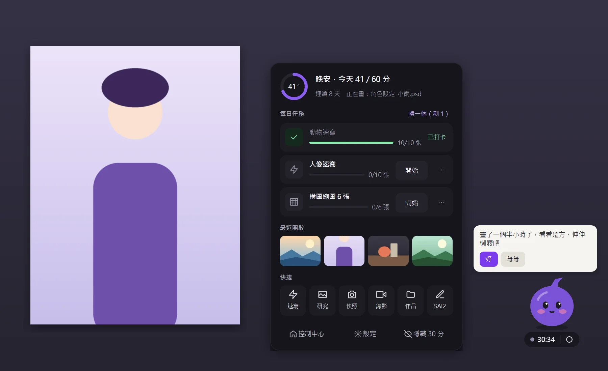
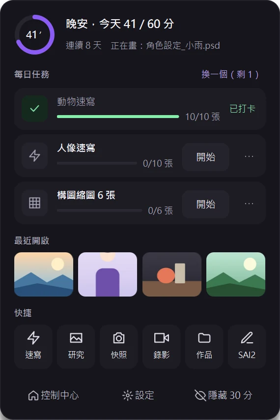
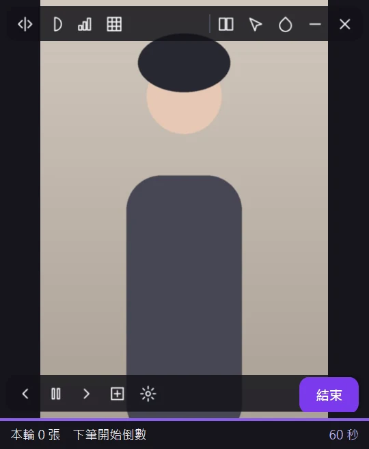
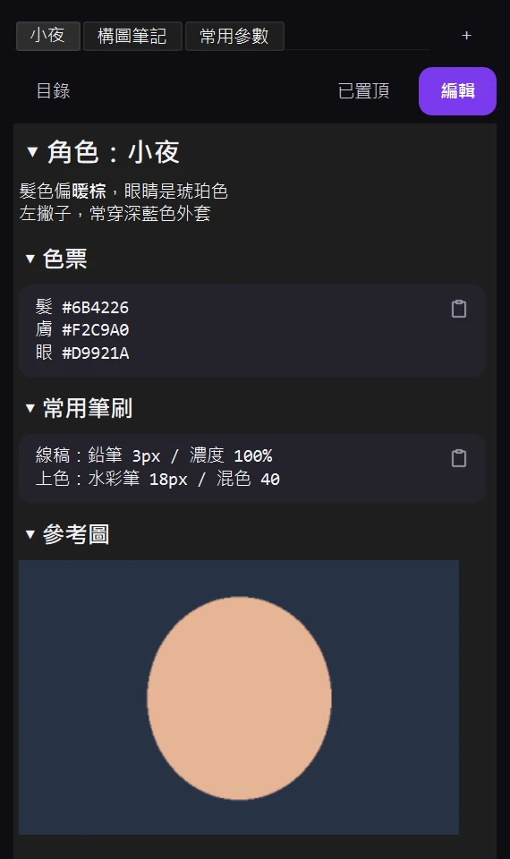
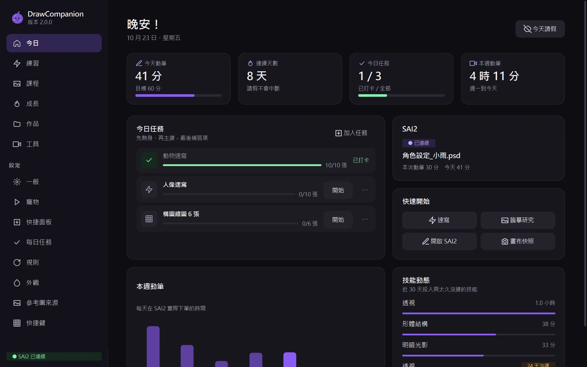
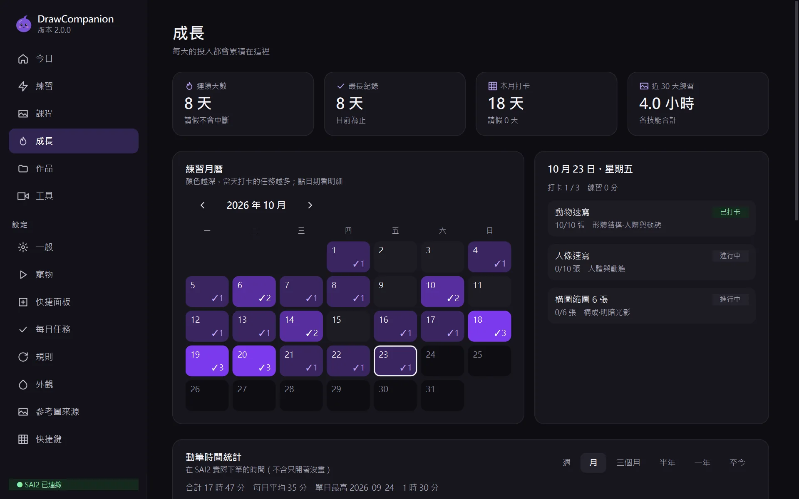
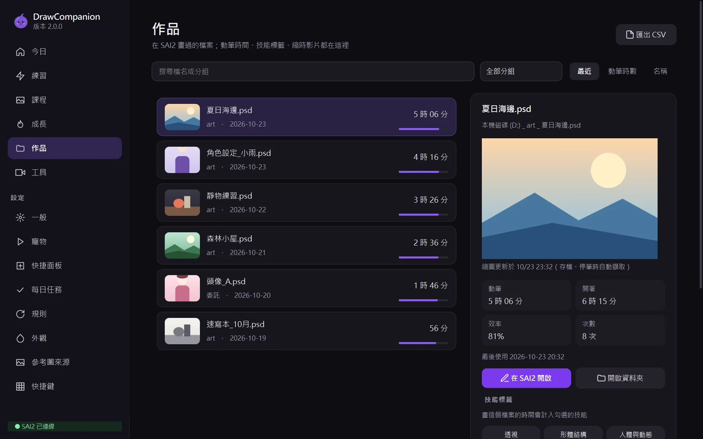
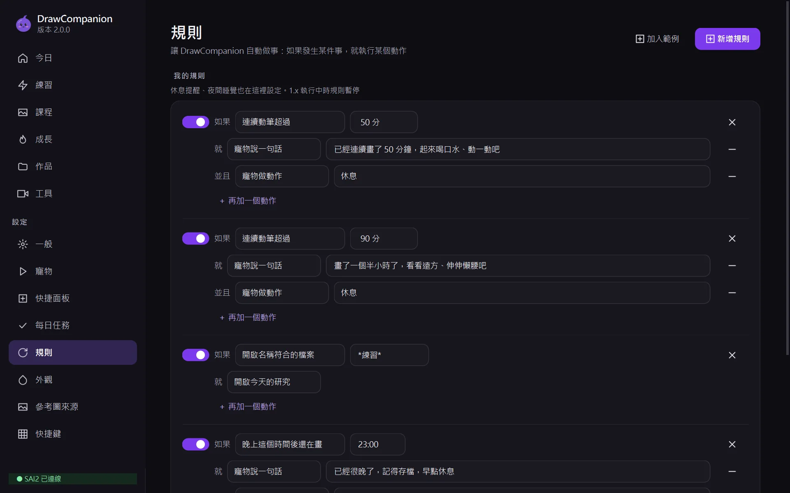
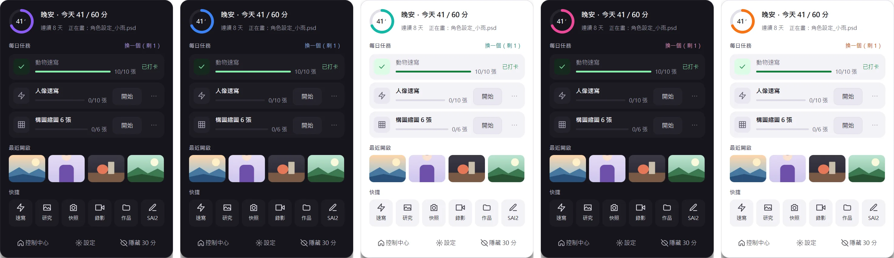
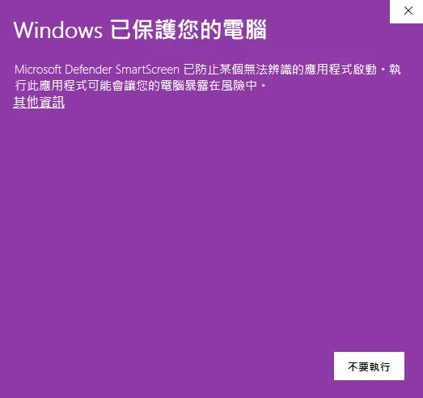

桌面寵物 × 快捷面板
點一下墨墨，常用的都在這
啟動後桌面只會出現墨墨，可以拖到任何地方。點一下打開快捷面板：
- 今日進度：今天畫了幾分鐘、連續幾天
- 每日任務：開始、繼續、打卡
- 最近開啟：作品縮圖，點了直接在 SAI2 開啟
- 快捷按鈕：速寫、臨摹、快照、縮時錄影…可以自己換
墨墨會依 SAI2 的狀態切換動作，畫太久會提醒你休息；寵物下方顯示本次動筆時間與錄影開關。
DrawCompanion 會在 PaintTool SAI2 旁邊安靜地陪著你：自動記錄每張作品畫了多久、每天排好練習任務，速寫和臨摹的參考圖用小窗開著，不占你的畫布。
Windows 10／11 · 免安裝，解壓縮就能用 · 之後在程式裡一鍵更新

偵測 SAI2 正在畫哪個檔案，只計算真正下筆的時間；不用按開始、也不會忘記按停止。
依你想練的技能排好速寫、臨摹、反覆練習；完成就打卡，連續天數與技能成長一目了然。
平常只有一隻小寵物；參考圖是可以穿透滑鼠的小窗，單螢幕也能一邊看一邊畫。
從 1.x 全新改寫，這些是以前沒有的
寫步驟、放參考圖、訂通過標準與評分項目，用自己的作品試評、校準 AI 評分，匯出 .dccourse 給朋友。
把課程上架，也能瀏覽、一鍵加入別人分享的課程；作者可以隨時更新或下架，或用分享碼直接傳給朋友。
有新版時寵物會告訴你，按「更新並重新啟動」就完成；紀錄與設定都保留，新版有問題會自動退回上一版。
以下都是 2.0 的實際畫面（範例資料）
啟動後桌面只會出現墨墨，可以拖到任何地方。點一下打開快捷面板：
墨墨會依 SAI2 的狀態切換動作，畫太久會提醒你休息；寵物下方顯示本次動筆時間與錄影開關。


``` 包起來的內容一鍵複製
主視窗的「今日」頁整理今天的動筆時間、每日任務、本週動筆長條圖與技能動態，也會提醒你哪些技能太久沒練。





在 SAI2 裡直接用的濾鏡與圖層功能，一次購買授權即可使用
免安裝，解壓縮後三步就好
點這裡下載 DrawCompanion2.zip（約 36 MB），在檔案上按右鍵 →「解壓縮全部」到一個資料夾，例如 D:\DrawCompanion。
資料夾裡有 DrawCompanion2.exe 和 _internal 資料夾，兩個要放在一起。紀錄、設定、縮圖和影片也都存在這裡，要搬家時整個資料夾一起搬。
桌面出現墨墨就完成了。打開 SAI2 開始畫，其他設定都有預設值，用到時才會提醒你。
DrawCompanion2.exe 的資料夾、覆蓋舊檔，紀錄與設定都會沿用這是正常的，按兩下就能繼續。之後再開啟就不會出現了。
這個視窗（顏色會跟著你的 Windows 主題色）是 Windows 內建的 Microsoft Defender SmartScreen。它會擋下「下載人數還不多、而且沒有數位簽章」的程式。DrawCompanion 是個人開發的免費工具，沒有購買每年數百美元的程式碼簽章憑證，下載的人也還不多，所以 Windows 還「不認識」它。這不是偵測到病毒，視窗裡也沒有說找到任何威脅。

DrawCompanion2.exe，按「仍要執行」另一個方法：解壓縮之前在 zip 上按右鍵 →「內容」→ 勾選下方的「解除封鎖」→ 確定，解壓出來的程式就不會再跳出提醒。公司或學校電腦若被管理員鎖定、沒有「仍要執行」按鈕，就需要請管理員協助。
每一版修了什麼，方便你決定要不要更新
更新方式：程式會自動檢查新版，在「設定 › 一般 › 更新」按「更新並重新啟動」即可。還在用測試版（beta）的話，請手動下載 DrawCompanion2.zip 一次，解壓縮到原本的資料夾覆蓋舊檔；紀錄與設定都會保留。
也能搭配 Photoshop 和 Clip Studio Paint 使用。
社群寵物庫：把自己畫的角色分享給大家，也能一鍵加入別人的角色。
2.0 正式版：自己做課程、分享到社群課程庫，以後更新也不用再手動下載。
.dccourse 分享寵物變成一整個陣容：輪流陪你畫、各有自己的動作、規則和對話框，還能打包分享。
SAI2 裡直接用的濾鏡與「筆畫」圖層效果（可在「工具」頁開關），也修正了和漢化模組的衝突。
mscms.dll，不再放 dwmapi.dll：舊版放的 dwmapi.dll 會讓漢化模組跳出警告、SAI2 無法啟動，更新後會自動清掉（只清本程式放的檔案）畫圖時的好幫手：隨手記參數的浮動筆記、放自己參考圖的參照視窗，以及可以調整的文字大小。
``` 或 ~~~ 包起來的內容一鍵複製；標題可收合、有目錄；編輯時 Ctrl+V 貼上截圖，點圖放大或複製回剪貼簿；可切換置頂不用先存檔也會記錄；作品的縮時影片可以合併、匯出成指定長度。也修正了幾個讓動筆時間記錯的問題，建議更新。
修正新版 SAI2（2026-10）的檔案路徑問題。用新版 SAI2 的人請一定要更新。
好用、難用、看不懂、壞掉，或是希望加入的功能，都歡迎告訴我。每一則回饋都會看。
drawcompanion2_error.log 一起貼上會很有幫助不再提供：筆刷工坊與液化（新版 SAI2 已內建素材登錄與網格變形）。介面目前只有繁體中文。
可以（2.2 起）。在「設定 › 一般 › 繪圖軟體」切換後，動筆時間、每日打卡、作品紀錄與畫布截圖都跟著那個軟體。Photoshop 的截圖需要畫面沒被其他視窗擋住；Clip Studio Paint 開好幾張畫布時以最後開啟的那張為準，截圖是最後一次存檔的樣子，未存檔的新畫布不會記錄。縮時錄影與模組目前只支援 SAI2。
資料夾版啟動時不用先把整個程式解開到暫存資料夾，開啟比較快，也比較不容易被防毒軟體誤擋；程式內的自動更新也是直接替換這個資料夾。解壓縮後執行 DrawCompanion2.exe，_internal 資料夾請不要刪除或移走。
新版連續三次沒有正常啟動，程式會自動退回上一版；也可以到「設定 › 一般 › 更新」按「回到上一版」。上一版完整保存在資料夾裡的 _previous。
不需要。zip 解壓縮後的資料夾已經包含執行需要的所有東西，直接執行 DrawCompanion2.exe。只有縮時錄影合成影片時需要另外安裝 ffmpeg。
那是 SmartScreen 對「沒有數位簽章、下載人數還少」的程式的提醒，不是偵測到病毒，按「其他資訊 → 仍要執行」即可；詳細步驟見 第一次執行。
不會。紀錄、作品縮圖、設定都只存在你的電腦（程式所在的資料夾）。程式只會在抓參考圖（大都會博物館、芝加哥藝術博物館、Unsplash、Pexels）、檢查新版、瀏覽社群課程庫與寵物庫、啟用授權，以及你開啟 AI 評鑑時連線；只有你主動上架的課程與角色會上傳，不會收集或傳送你的使用資料。
預設是「下筆時才倒數」：要在 SAI2 已存檔的畫布上下筆才會倒數，停筆看參考圖時會暫停。開始速寫時會自動建立並開啟一張畫布；想改成一直倒數，到小窗的速寫設定或「設定 → 參考圖來源 → 練習畫布」關閉。
可以把墨墨拖到任何地方；動筆時它會自動變半透明。快捷面板裡的「隱藏 30 分」可以暫時收起來，系統匣圖示隨時叫回來。
可以。到「設定 → 小幫手」，按陣容的「＋」建立新角色，指定各狀態的圖檔即可；建議 512×512 透明背景的 APNG 或 WebP，也可以用排好多格的序列圖。做好的角色包可以匯出分享給其他人，或在角色的「資料」分頁上架到社群寵物庫；也可以從「社群寵物庫」加入別人畫的角色。